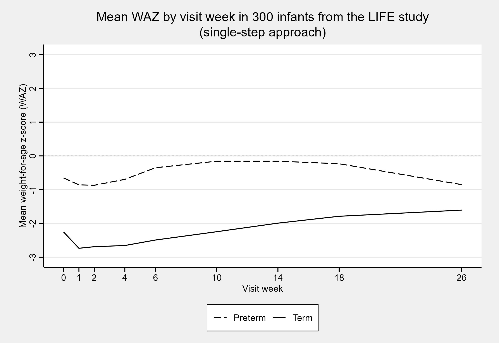
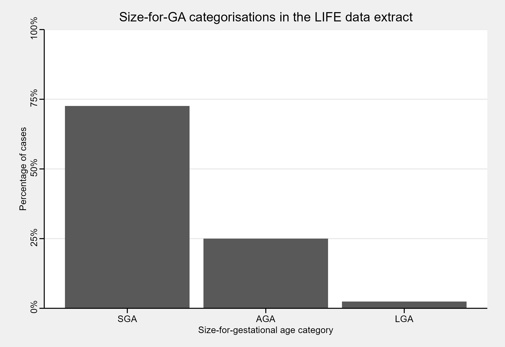
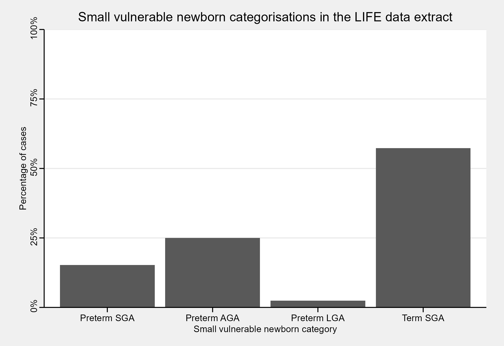

Introduction
Produced as part of the Guidance for International Growth Standards project at the London School of Hygiene & Tropical Medicine, gigs provides a single, simple interface for working with the WHO Child Growth standards and outputs from the INTERGROWTH-21st project. It provides functions for easy and reproducible classification of fetal, newborn, and infant growth using international growth standards. The package allows conversions and classifications of growth measurements to centiles, z-scores, and common international metrics such as stunting.
Getting started
Let’s start by loading the package.
This vignette has two examples for applying gigs. The first is using gigs to convert growth measurements into centiles or z-scores according to appropriate standards from either the INTERGROWTH-21st or WHO Child Growth standards. The second is using gigs to convert growth measurements to categorical growth outcomes, in this case size-for-gestational age.
Example data
This tutorial uses a sample of data from 300 infants enrolled in the Low birthweight Infant Feeding Exploration (LIFE) study1,2. These infants were assessed at birth then followed up at intervals after birth, with data available up to six months of age in this data extract.
Though gigs::life6mo has data on length in cm
(len_cm), head circumference (headcirc_cm),
and mid-upper arm circumference (muac_cm), we are going to
subset this dataset to focus on weight in kilograms
(wt_kg). The dataset also has columns with an ID number per
infant in the study (id), the gestational age at birth for
each infant (gestage), the sex of each infant
(sex; "M" = male, "F" = female),
the visit week at which weight was recorded (visitweek),
and post-menstrual age in days (pma).
After loading the dataset, we add a variable preterm,
which is TRUE wherever an infant was born before 37 weeks’
gestational age. We also convert sex from a
factor to a character variable so that
gigs will accept it as an input.
Loading the data
data(life6mo)
life6mo <- life6mo[, 1:7] # Removes `len_cm`, `headcirc_cm`, and `muac_cm`
life6mo$preterm <- life6mo$gestage < 37 * 7
life6mo$sex <- as.character(life6mo$sex)
life6mo$id <- as.factor(life6mo$id)
head(life6mo, n = 5)
#> id gestage sex visitweek pma age_days wt_kg preterm
#> 1 1 273 M 0 273 0 2.300 FALSE
#> 2 1 273 M 1 280 7 2.185 FALSE
#> 3 1 273 M 2 288 15 2.325 FALSE
#> 4 1 273 M 4 301 28 2.575 FALSE
#> 5 1 273 M 6 316 43 3.410 FALSEUsing gigs to convert growth measurements to z-scores
Single-step approach
The easiest way to use gigs is to let it handle work for you. Using its z-scoring functions, you can apply GIGS-recommended growth standards for each measurement and time point in your data. Standards are applied based on the best practices advised by WHO and INTERGROWTH-21st when using their respective growth standards.
We can use gigs_waz() to add weight-for-age z-scores to
our dataset in a single step:
life6mo_zscored <- life6mo
life6mo_zscored$waz <- gigs_waz(weight_kg = life6mo$wt_kg,
age_days = life6mo$age_days,
gest_days = life6mo$gestage,
sex = life6mo$sex,
id = life6mo$id)
#> Warning in gigs_waz(weight_kg = life6mo$wt_kg, age_days = life6mo$age_days, : There were 134 'at birth' observations where `age_days` > 0.5.
#> ℹ This occurred for IDs 2, 3, 6, 7, 12, 13, 14, 16, 20, 21, 22, 23, 24, …, 295,
#> and 298.
life6mo_zscored[, c("id", "visitweek", "gestage", "age_days", "sex", "waz")] |>
head(n = 5)
#> id visitweek gestage age_days sex waz
#> 1 1 0 273 0 M -2.298544
#> 2 1 1 273 7 M -3.026682
#> 3 1 2 273 15 M -3.249340
#> 4 1 4 273 28 M -3.619941
#> 5 1 6 273 43 M -2.796237On plotting the mean weight-for-age z-scores as a function of the visit week, we see that preterm z-scores in the LIFE data extract are on average higher than for term infants. This is expected for this dataset, as term infants in the LIFE study were only included if they were particularly small at birth. In contrast, preterm infants were included irrespective of their relative size at birth.

Multi-step approach
Instead of letting gigs do the heavy lifting, you may want to clearly lay out the steps taken in your analysis. Luckily, gigs provides all the functionality you need for this.
We start by generating WAZs using each growth standard. To do this,
we need to use the gigs conversion functions. These
take vectors of growth data and convert them into z-scores or centiles.
You can use either value2zscore() or
value2zcentile() depending on which conversion you want to
do. You then pass in two parameters, family and
acronym, which describe:
-
family: The broad set of growth standards you want to use-
ig_fet- INTERGROWTH-21st Fetal standards3–9 -
ig_nbs- INTERGROWTH-21st Newborn Size Standards (incl. very preterm)10–12 -
ig_png- INTERGROWTH-21st Postnatal Growth Standards13 -
who_gs- WHO Child Growth Standards14–16
-
-
acronym: The specific growth standard you want to use, e.g. for the INTERGROWTH-21st Postnatal Growth Standards:-
"wfa"(weight-for-age) -
"lfa"(length-for-age) -
"hcfa"(head circumference-for-age) -
"wfl"(weight-for-length)
-
waz_nbs <- with(life6mo, value2zscore(y = wt_kg,
x = gestage,
sex = sex,
family = "ig_nbs",
acronym = "wfga"))
waz_who <- with(life6mo, value2zscore(y = wt_kg,
x = age_days,
sex = sex,
family = "who_gs",
acronym = "wfa"))
waz_png <- with(life6mo, value2zscore(y = wt_kg,
x = pma / 7,
sex = sex,
family = "ig_png",
acronym = "wfa"))
#> Warning in value2zscore(y = wt_kg, x = pma/7, sex = sex, family = "ig_png", : Input arguments have invalid values:
#> ℹ Argument `x`: 128 in 2191 elements were out-of-bounds (see the GIGS conversion function documentation for bounds).This “out of bounds” warning from *gigs** tells us that it couldn’t calculate a z-score for 128 observations, because the post-menstrual age for those observations was outside the range of the INTERGROWTH-21st Postnatal Growth Standards (i.e. 27 to 64 weeks’ post-menstrual age).
Nonetheless, we now have standard-specific WAZs. We can use a chain
of ifelse() functions to make one overall waz
column in life6mo. The first condition,
visitweek == 0, ensures that the
INTERGROWTH-21st Newborn Size standards are used for measures
taken at visit week zero (which for this study, is equivalent to
at-birth). The preterm and pma <= 64 * 7
conditions ensure that the INTERGROWTH-21st Postnatal Growth
standards are used for preterm infants who are younger than than 64
weeks PMA (the upper limit of the INTERGROWTH-21st Postnatal
Growth standards). The final condition, use_who_gs, ensures
that the WHO Child Growth standard z-scores are used wherever infants
were either born term, or were born preterm and are older than 64 weeks
PMA.
is_birth_measure <- with(life6mo_zscored, visitweek == 0)
use_ig_nbs <- with(life6mo_zscored, is_birth_measure)
use_ig_png <- with(life6mo_zscored,
!is_birth_measure & preterm & pma <= 64 * 7)
use_who_gs <- with(life6mo_zscored,
!is_birth_measure & !preterm | (preterm & pma > 64 * 7))
life6mo_zscored$waz_complex <- rep.int(NA_real_, nrow(life6mo_zscored))
life6mo_zscored$waz_complex[use_ig_nbs] <- waz_nbs[use_ig_nbs]
life6mo_zscored$waz_complex[use_ig_png] <- waz_png[use_ig_png]
life6mo_zscored$waz_complex[use_who_gs] <- waz_who[use_who_gs]On plotting the mean WAZ for each visit week, we get the same plot as
when we used the z-scores from classify_wfa()!
Sure - you can do it yourself, but doing it manually makes
it more likely to apply the wrong growth standard for a given
observation. Instead, use the gigs_waz() function and
friends (gigs_lhaz(), gigs_wlz(),
gigs_hcaz()) to automatically use growth standards
suggested by GIGS for each observation in your data.
Using gigs to obtaining growth outcomes from measurements
The gigs package contains functions which can be used to assess a range of common growth outcomes:
- Size-for-gestational age with
compute_sfga()/classify_sfga() - Small, vulnerable newborns with
compute_svn()/classify_svn() - Stunting with
compute_stunting()/classify_stunting() - Wasting with
compute_wasting()/classify_wasting() - Weight-for-age with
compute_wfa()/classify_wfa() - Head size with
compute_headsize()/classify_headsize()
You can also obtain classifications for some or all of these outcomes
simultaneously using classify_growth(). In this vignette,
we will focus on size-for-GA and small, vulnerable newborn (SVN)
classifications.
Size-for-GA
We can use compute_sfga() to obtain counts of
size-for-GA categories in this dataset. We can then convert these counts
to percentages:
# Restrict LIFE data to only rows with birthweights (i.e. age <12hrs) that
# have all a weight, GA, and sex value
life6mo_newborns <- with(life6mo,
life6mo[visitweek == 0 & age_days < 0.5 & complete.cases(wt_kg, gestage, sex), ]
)
# Compute birthweight centiles and convert these to size-for-GA categories
life6mo_newborns$sfga <- with(life6mo_newborns,
compute_sfga(weight_kg = wt_kg,
gest_days = gestage,
sex = sex))
sfga_summary <- with(life6mo_newborns, summary(sfga[!is.na(sfga)]))
sfga_summary <- round(sfga_summary / sum(sfga_summary) * 100, 2)
sfga_summary
#> SGA AGA LGA
#> 72.56 25.00 2.44
In this dataset, the bulk of newborns are SGA - but what if we stratify our size-for-GA classifications based on whether infants were term or preterm?
Small vulnerable newborns
The full SVN framework stratifies small, at-risk newborns based on a combination of their size-for-GA, whether they were low birth-weight (LBW; birth weight < 2500g), and whether they were born term or preterm17. In a global analysis of SVN type prevalence and mortality, Lawn et al.18 focused on a smaller subset of SVN categories which omitted whether infants were LBW. The gigs package offers SVN classification functionality for this smaller subset of SVN categories, as 99.5% of global LBW is the consequence of preterm birth and SGA.
To classify SVN in gigs, the compute_svn() function can
be used. We can then convert the counts for each SVN category to
percentages, and plot the results:
life6mo_newborns$svn <- with(life6mo_newborns,
compute_svn(weight_kg = wt_kg,
gest_days = gestage,
sex = sex))
#> ! Unused factor levels kept after small vulnerable newborn categorisation:
#> "Term AGA" and "Term LGA".
svn_summary <- with(life6mo_newborns, summary(svn[!is.na(svn)]))
svn_summary <- round(svn_summary / sum(svn_summary) * 100, 2)
svn_summary
#> Preterm SGA Preterm AGA Preterm LGA Term SGA Term AGA Term LGA
#> 15.24 25.00 2.44 57.32 0.00 0.00On plotting this data, we find that the bulk of SGA cases are from term infants. We would usually expect that size-for-GA categories were distributed similarly for preterm and term infants. However, due again to the sampling process for the LIFE study, we should expect that the term infants are SGA whilst the preterm infants are a mix of SGA/AGA/LGA.
